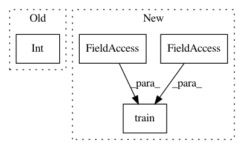

d9f194f797f406969f454ba7338c798c14cff01e,baselines/a2c/run_atari.py,,main,#,36
Before Change
def main():
train("BreakoutNoFrameskip-v4", num_timesteps=int(40e6), seed=0, policy="cnn", lrschedule="linear", num_cpu=16)
if __name__ == "__main__":
After Change
parser.add_argument("--million_frames", help="How many frames to train (/ 1e6). "
"This number gets divided by 4 due to frameskip", type=int, default=40)
args = parser.parse_args()
train(args.env, num_frames=1e6 * args.million_frames, seed=args.seed,
policy=args.policy, lrschedule=args.lrschedule, num_cpu=16)
if __name__ == "__main__":
main()
In pattern: SUPERPATTERN
Frequency: 3
Non-data size: 4
Instances
Project Name: openai/baselines
Commit Name: d9f194f797f406969f454ba7338c798c14cff01e
Time: 2017-08-27
Author: joschu@openai.com
File Name: baselines/a2c/run_atari.py
Class Name:
Method Name: main
Project Name: openai/baselines
Commit Name: d9f194f797f406969f454ba7338c798c14cff01e
Time: 2017-08-27
Author: joschu@openai.com
File Name: baselines/acktr/run_atari.py
Class Name:
Method Name: main
Project Name: UFAL-DSG/tgen
Commit Name: a3c24e5e3222592a0c4e002ac47e3b7e048327d1
Time: 2014-03-26
Author: odusek@ufal.mff.cuni.cz
File Name: tgen/tgen_random.py
Class Name:
Method Name: